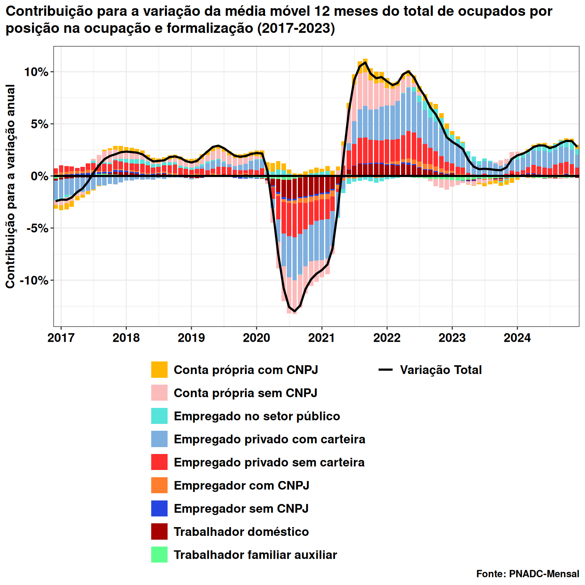
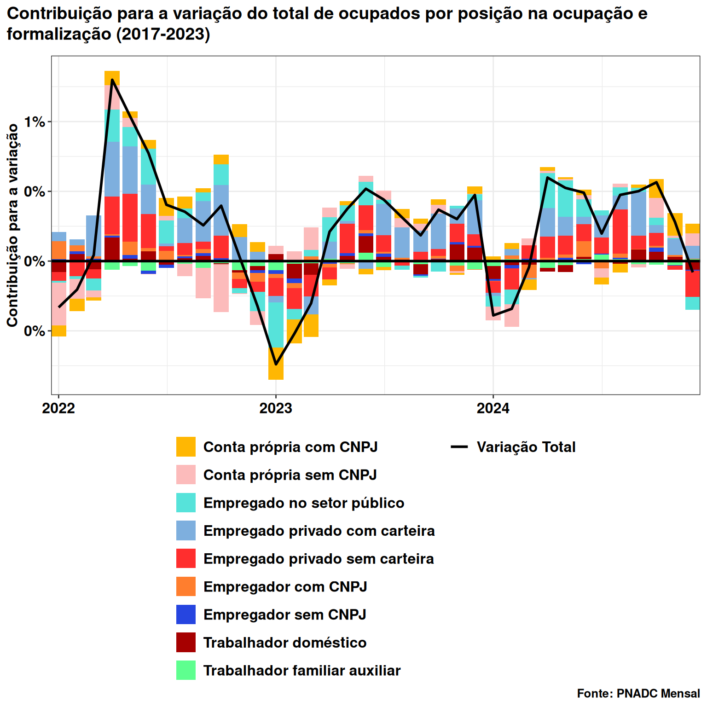
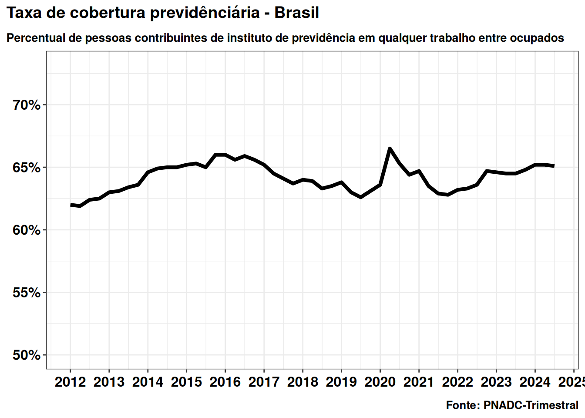
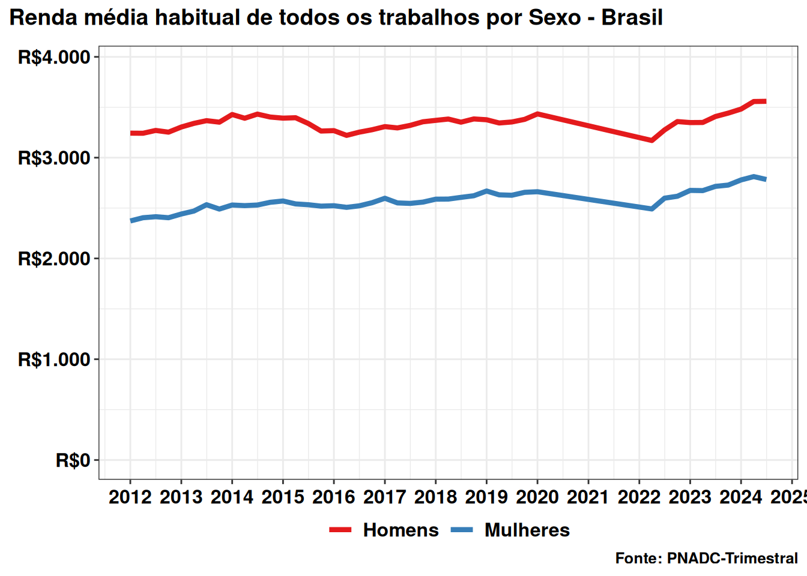
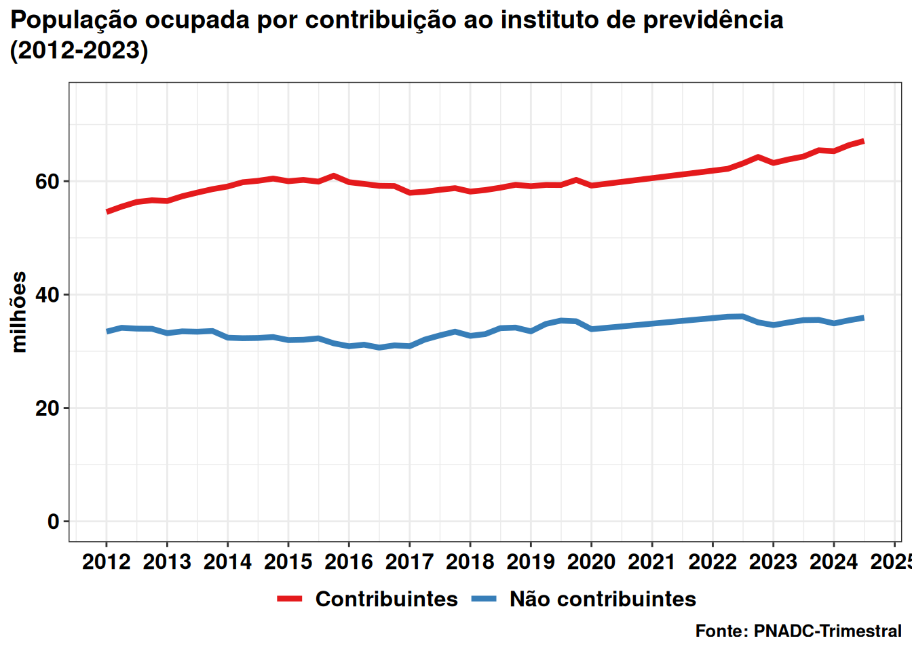

Taxa de desocupação
Última atualização em: 2025-01-09 00:17:15.
1) Taxa de desocupação.
2) Taxa de desocupação por sexo (PNADC-T)

3) Nível de desocupação (PNADC-T)

4) Quantidade de pessoas na força de trabalho

5) Taxa de desocupação por faixa etária (PNADC-T)

6) Quantidade de ocupados
7) Contribuição para a variação dos ocupados (média móvel 12 meses)


8) Quantidade de desocupados

9) Quantidade de subocupados

10) Quantidade de desalentados
11) Força de trabalho potencial
12) Quantidade de pessoas subutilizadas

Nota: A partir do 4º trimestre de 2015 houve mudança de conceito na subutilização da força de trabalho por insuficiência de horas trabalhadas (subocupação). Anteriormente, considerava-se no cálculo do indicador as horas efetivamente trabalhadas e, a partir do referido trimestre, as habitualmente trabalhadas. Houve ainda mudança na forma de captação do quesito de horas trabalhadas. Mais informações aqui.
13) Composição da subutilização da força de trabalho no Brasil

Nota: Houve mudança metodológica na subocupação por insuficiência de horas, apontada no item anterior. Por conta disto, neste caso, equalizamos o patamar da série até 2015 para manter a comparação com a série na metologia atual.
14) Rendimento efetivo médio todos os trabalhos
Tabela 6387 - Rendimento médio, real e nominal, de todos os trabalhos, efetivamente recebido no mês de referência, pelas pessoas de 14 anos ou mais de idade, ocupadas na semana de referência, com rendimento de trabalho.

15) Rendimento efetivo médio trabalhos principal, por posição na ocupação
Tabela 6389 - Rendimento médio, real e nominal, trabalho principal, habitualmente recebido no mês de referência, pelas pessoas de 14 anos ou mais de idade, ocupadas na semana de referência, com rendimento de trabalho, por posição na ocupação

16) Massa real de rendimentos de todos os trabalhos

17) Percentual de pessoas contribuintes de instituto de previdência em qualquer trabalho entre ocupados

18) Salário mínimo real

19) Horas médias trabalhadas por raça

O Sidra não divulgou os valores para a série nos trimestres onde a pesquisa foi feita por telefone em 2020, devido à pandemia.
20) Rendimento real médio por sexo

O Sidra não divulgou os valores para a série nos trimestres onde a pesquisa foi feita por telefone em 2020, devido à pandemia.
21) População ocupada por contribuição ao instituto de previdência

O Sidra não divulgou os valores para a série nos trimestres onde a pesquisa foi feita por telefone em 2020, devido à pandemia.
22) Subocupação
A partir do 4º trimestre de 2015 houve mudança de conceito na subutilização da força de trabalho por insuficiência de horas trabalhadas. Anteriormente, considerava-se no cálculo do indicador as horas efetivamente trabalhadas e, a partir do referido trimestre, as habitualmente trabalhadas. Houve ainda mudança na forma de captação do quesito de horas trabalhadas. Por conta disto, não são realizadas comparações (trimestrais e/ou anuais) entre trimestres que não compartilham o mesmo conceito/forma de captação.
23) Rendimento real médio efetivo por posição de ocupação